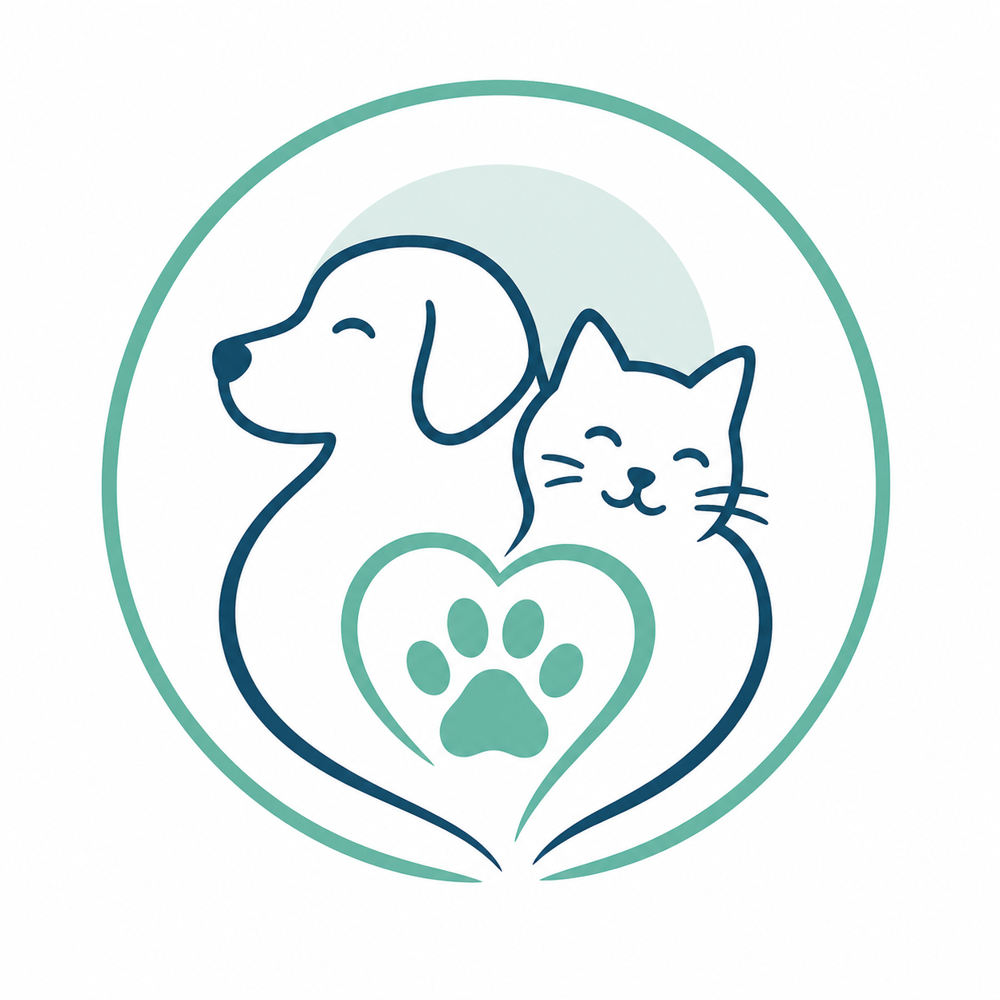
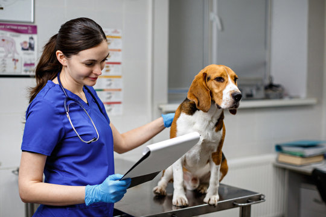

Consultas
Exámenes clínicos generales, diagnóstico temprano y seguimiento continuo para garantizar la salud y vitalidad de tu mascota en cada etapa.

Cuidamos a tu mascota como parte de nuestra familia
Ofrecemos atención médica preventiva, diagnósticos precisos, cirugías y servicio de urgencias con el compromiso y la calidez que tu mascota merece.
Solicita un turnoExámenes clínicos generales, diagnóstico temprano y seguimiento continuo para garantizar la salud y vitalidad de tu mascota en cada etapa.
Cuidado y monitoreo médico continuo las 24 horas para pacientes en recuperación postquirúrgica o tratamientos intensivos.
Terapias físicas personalizadas para mejorar la movilidad, aliviar dolores crónicos y acelerar la recuperación postquirúrgica.
